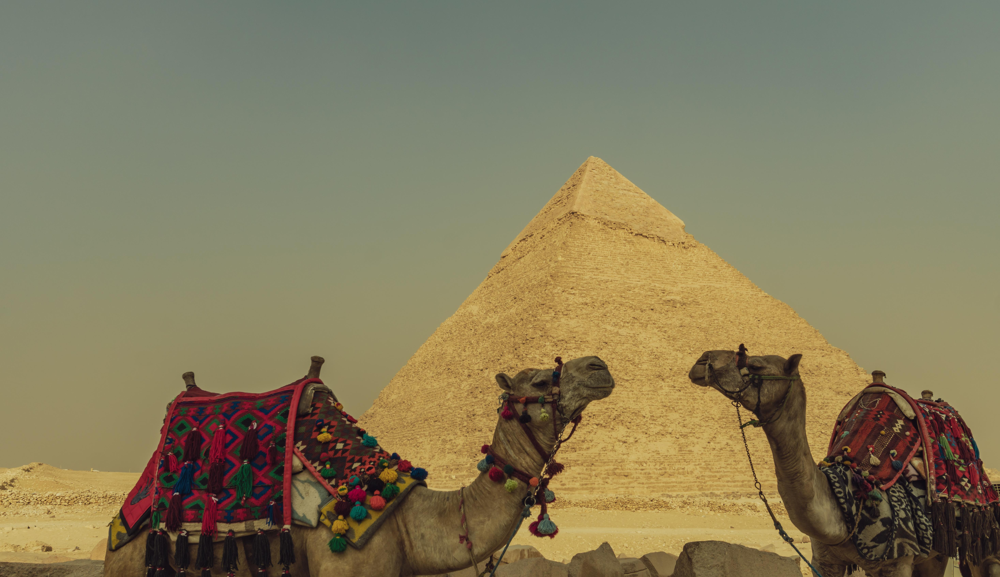
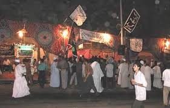
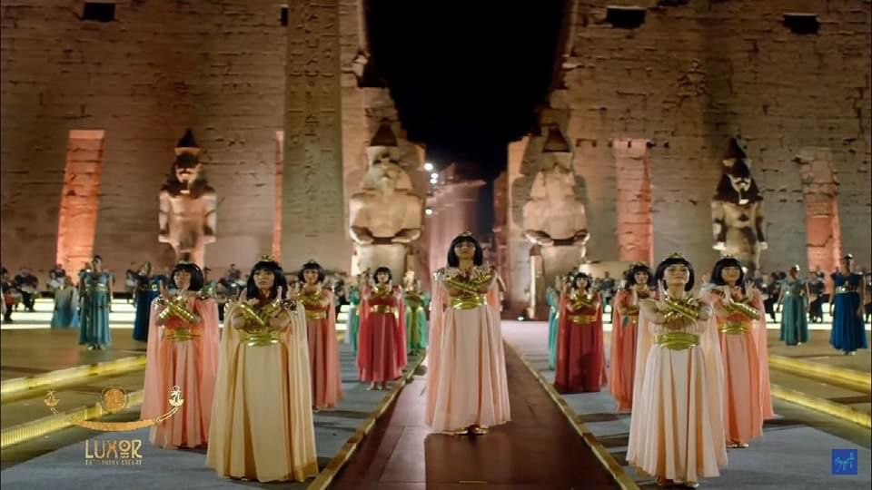
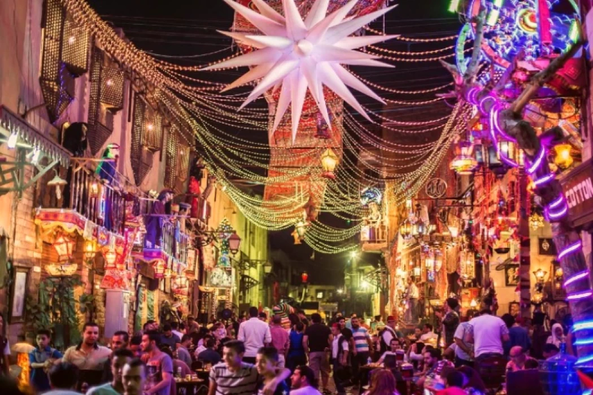

Cultura
A cultura do Egito é uma das mais antigas e influentes do mundo, marcada no Antigo Egito pela religiosidade, teocracia, construções monumentais como as pirâmides de Gizé, mumificação e a dependência do rio Nilo. Hoje, é um país árabe majoritariamente muçulmano, que funde tradições milenares com a cultura islâmica moderna, destacando-se na culinária, artes e turismo.
A cultura do Egito é uma das mais antigas e fascinantes do mundo, com origens que remontam a mais de 3 mil anos antes de Cristo. No Egito Antigo, a sociedade era profundamente marcada pela religião, onde deuses como Rá, Osíris e Ísis influenciavam todos os aspectos da vida. Os egípcios acreditavam na vida após a morte, o que levou ao desenvolvimento de práticas como a mumificação e à construção de monumentos grandiosos, como as pirâmides e templos. Além disso, destacaram-se em áreas como arquitetura, medicina, escrita (com os hieróglifos) e organização social, sendo governados por faraós considerados divindades vivas.
Atualmente, a cultura egípcia é uma mistura rica entre tradições milenares e influências modernas. O país é majoritariamente muçulmano, e a religião islâmica exerce grande influência nos costumes, na arte e no cotidiano da população. Mesmo com a modernização, muitos hábitos tradicionais ainda são preservados, como a hospitalidade, a culinária típica e as celebrações religiosas. O Egito também é conhecido mundialmente por sua música, dança (como a dança do ventre) e produção artística. Além disso, o turismo tem um papel fundamental, já que milhões de pessoas visitam o país todos os anos para conhecer sua história e seus monumentos históricos.
Assim, o Egito se destaca por conseguir manter viva sua herança histórica ao mesmo tempo em que se adapta ao mundo contemporâneo, criando uma cultura única que une passado e presente de forma harmoniosa.

Camelos no Egitos
Festival Moulid no Egito
Festival Tradicional em Luxor
Festival Religioso no Cairo